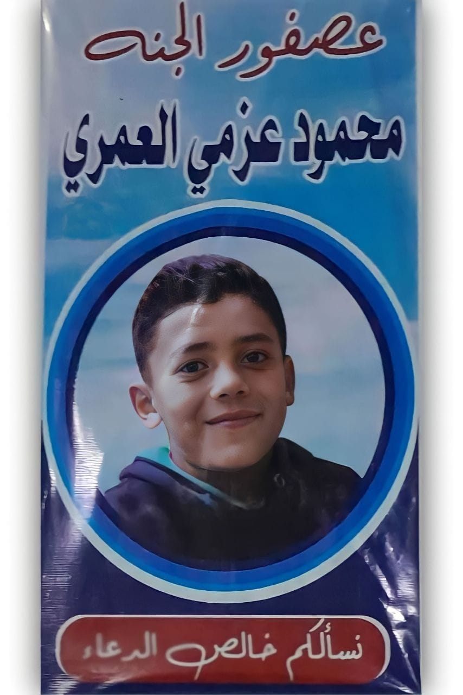

بِسْمِ اللهِ الرَّحْمَنِ الرَّحِيمِ
رحم الله محمود عزمي العمري
رحل عن الدنيا في 9 يوليو 2022، وبقي الدعاء والأثر الطيب. لعلّ من يقرأ هنا قرآنًا أو يذكر الله أو يرفع دعاءً، فيكون ذلك خيرًا ورحمةً له.
114سورة
6236آية
2022عام الرحيل

اللهم اغفر له وارحمهولا تنسوه من صالح دعائكم
خيرٌ يُقرأ ويُذكر
أبواب الخير
اختار ما ينفعك، واذكر محمودًا بدعوة طيبة.
دعوة من القلب
إذا مررت من هنا، فاذكره بدعوة
اللهم اغفر لمحمود عزمي العمري وارحمه، وعافه واعف عنه، وأكرم نزله ووسع مدخله، ونوّر قبره، واجعل قبره روضةً من رياض الجنة.
اللهم اجعل القرآن نورًا له، واجعل كل من قرأ وذكر ودعا هنا سببًا في رحمتك له.
تذكرة اليوم
لا تنسَ الدعاء
اللهم اغفر لمحمود عزمي العمري وارحمه رحمة واسعة.